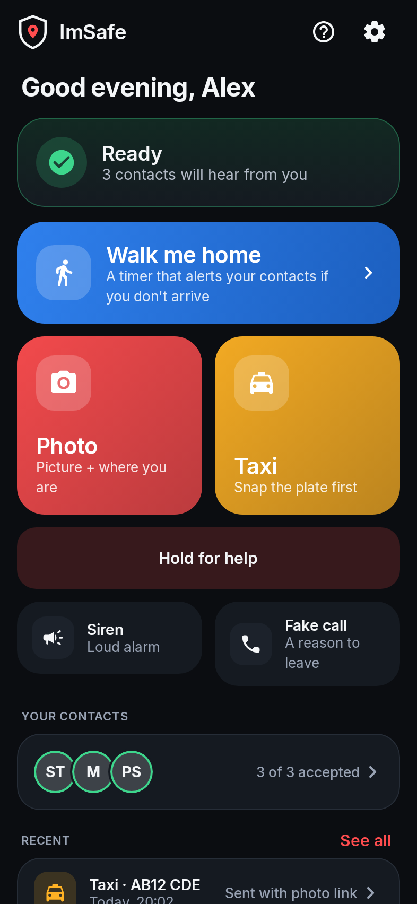
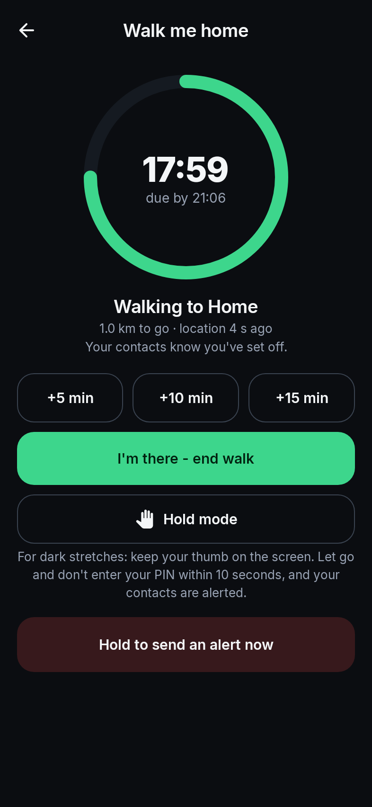
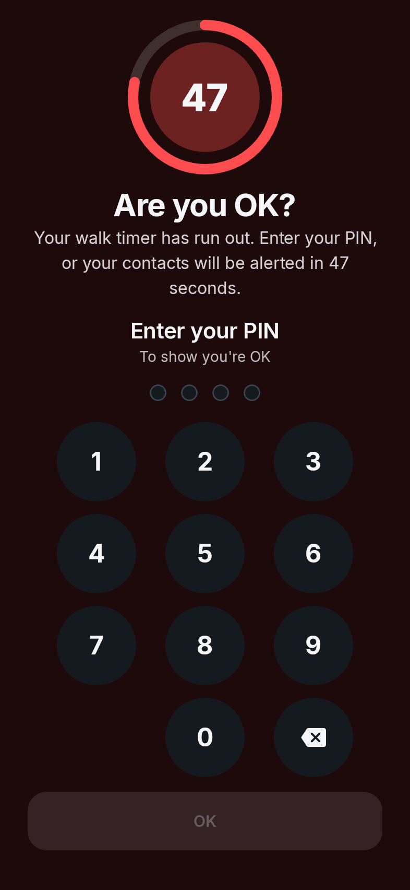
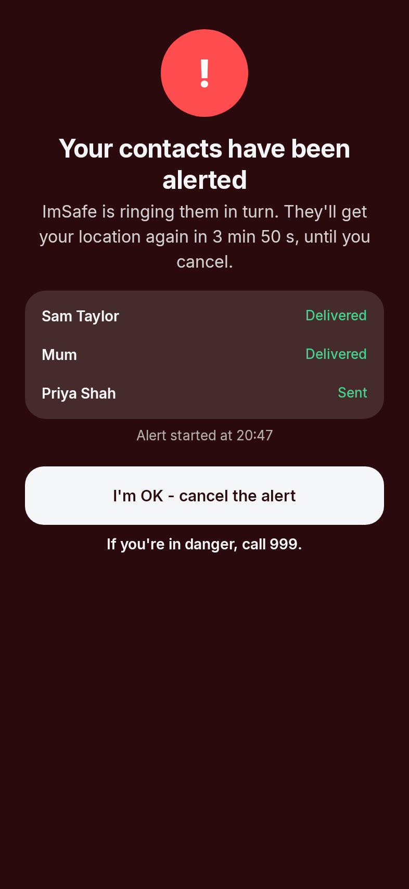
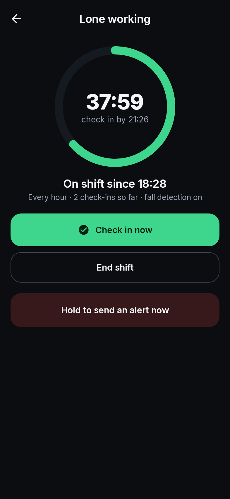
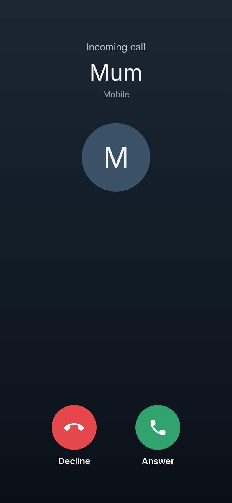
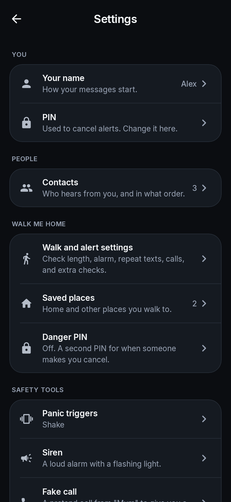

Get home. If you don't, the right people know where you are.
ImSafe sends your location and a photo to the people you choose in one press. Walk me home counts you in: if you don't arrive or answer, it texts your contacts where you are and rings them, one by one, until you're safe.
No account, no adverts, nothing sent to the developer. Just your phone, your contacts and you.
Download for AndroidHow to install
- Version 1.0.1
- Android 10 or later
- 26.7 MB
Free, with nothing to unlock. Compare or read the release notes.
Chrome may say the file might be harmful. It shows this for app files that do not come from Google Play. Choose Download anyway.

- No subscriptionEvery feature is in the free app.
- No advertsNone in the app and none on this site.
- No accountNothing to sign up for, nothing sent to the developer.
- Your own numberOrdinary texts and calls your contacts will recognise.
A look inside
These are the real screens, drawn from the app's own code with made-up names. Swipe or scroll sideways to see them all.






How Walk me home works
Set it going as you leave. If all goes well, you never hear from it again.
Say where you're going
Pick a saved place, search an address or postcode on the map, or just set a timer. ImSafe works out the walking time and adds extra for stops.
Walk
ImSafe follows your location with the screen off. Get there and the walk ends by itself. Running late? Add time with one tap, even from the notification.
No answer? Help comes
When time runs out you're asked “Are you OK?”. No PIN within a minute and your contacts get your location, then are rung one by one on speaker, with updates until you cancel.
Everything is in, and all of it is free
Most extras are switched off until you want them, so ImSafe stays simple for everyday use.
In one press
- Photo and location
- The camera opens already finding where you are. Take the picture and your contacts get a text with a map link straight away.
- Taxi
- Snap the number plate before you get in. ImSafe can read the plate on the phone and put it in the text.
- Photo links
- Connect your own Google Drive and the photo follows as a link that opens on any phone.
- Hold for help
- Hold the button for two seconds and your contacts are alerted at once.
Walk me home
- A timer that gets help
- Pick a saved place, search a postcode, or just set a time. Arrive and it ends by itself.
- “Are you OK?”
- When time runs out, an alarm and a full-screen check, even with the phone locked. Enter your PIN to say you're fine.
- Texts, then calls
- No answer and your contacts get your location, then ImSafe rings them one by one on speaker, with updates every few minutes.
- Danger PIN
- If you're made to cancel, a second PIN looks exactly like a normal cancel but quietly asks for help.
When it matters
- Panic triggers
- Shake the phone hard, or press the side button five times, to raise the alarm without looking. Each is off until you switch it on.
- Siren
- A loud alarm with a flashing torch and screen, at full volume even on silent.
- Fake call
- Your phone rings from “Mum”, or whoever you choose, when you need a reason to go.
- Battery and switch-off
- If the battery gets low or the phone is turned off during a walk, your contacts get your last location.
Made for you
- Lone working
- Tucked away in Advanced: check-ins every 15 minutes to 2 hours, with optional fall detection.
- Widgets and a tile
- Photo, Walk and a 4×2 dashboard with a live countdown, plus a quick settings tile.
- Test mode
- Practise everything for an hour without texting or ringing anyone.
- Your words
- See and change every text your contacts get, with a live preview.
Private by design
No servers
ImSafe has no servers of its own. Your contacts, settings and history stay on your phone.
Your own Drive
Photos go to your own Google Drive, and ImSafe can only see the files it made.
Only when you ask
Your location is only used when you send something, or during a walk, shift or alert, and only goes to your contacts.
What ImSafe can't do
It isn't an emergency service
ImSafe tells the people you choose, not the police or ambulance, and nobody monitors it. If you're in danger, call 999.
It needs signal and battery
Texts wait for signal. A flat or switched-off phone can't send anything, which is why ImSafe texts your last location when the battery gets low.
Can't speak on a 999 call?
Dial 999, listen, then press 55 when asked. This is the police Silent Solution.
Installing and setting up
ImSafe is not on Google Play, so your phone asks a few extra questions the first time. Setup then walks you through the rest.
Download and install
Tap Download on your phone. The file is called ImSafe.apk and is about 26.7 MB. Open it and allow your browser to install apps. If Google Play Protect steps in, choose More details, then Install anyway.
Allow texts
On Android 13 and later, open App info, tap ⋮ and choose Allow restricted settings, then allow SMS. ImSafe shows you each step.
Add your people
Choose a PIN and up to five contacts. Send each an invite to reply YES. Then try it all in Test mode, with nothing really sent.
Version 1.0.1, released 21 November 2026. See the release notes, or check your download.
Questions
Is ImSafe really free?
Yes. There is no paid version, no subscription and no adverts. Texts and calls are ordinary ones from your own phone, so they're charged at your normal rate, and most UK plans include unlimited texts.
Is ImSafe on Google Play?
No. ImSafe is a personal project and is downloaded from this site as an Android app file. It needs Android 10 or later.
Do my contacts need the app?
No. They get ordinary text messages and phone calls. When you add someone, ImSafe shows you an invite to send, asking them to reply YES. Until they do they still get your messages, and Home reminds you.
Is ImSafe an emergency service?
No. ImSafe tells the people you choose. It doesn't contact the police or ambulance, and nobody watches your alerts. If you're in danger, call 999. If you can't speak, call 999, listen, then press 55 when asked.
Why does Android say texts are a restricted setting?
On Android 13 and later, apps installed from outside Google Play have to be allowed to send texts by hand. ImSafe shows you exactly where: App info, then the ⋮ menu, then Allow restricted settings. It only takes a moment, once.
Does ImSafe track me?
Only while you ask it to: when you send something, and during a walk, a shift or an alert. Your location goes only to your own contacts, never to the developer. The detail is in the privacy policy.
What happens if I enter my danger PIN?
The screen looks exactly as if you'd entered your normal PIN, and the history shows it the same way. Your contacts get a hidden alert with your location every few minutes for half an hour. Their phones aren't rung, so nothing gives you away.
Can I try it without worrying anyone?
Yes. Turn on Test mode in Settings. For an hour, ImSafe goes through every step and shows what would be sent, but no texts go and nobody is rung.
Walk home with someone in your pocket
Free, with no adverts and nothing to unlock. Made by the developer of several other free Android apps: see them all.